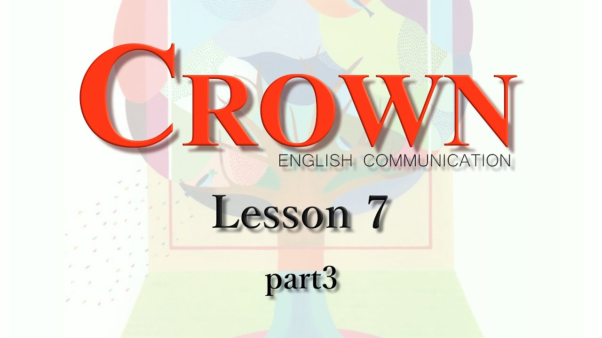

おすすめ
【ComⅡ】Lesson7-3和訳 重要表現
【ComⅡ】Lesson7-3和訳 重要表現

宮田師の訳を文字起こししたものです。もしもミスがあった場合は教えて下さい。
この質問に対する答えは自然にインスピレーションを頼ることによって見つけることができるかもしれないと、ジェン・ベニスは言っている。バイオミミクリーという言葉は生命を意味するバイオと模倣を意味するミミクリーからきている。自然を模倣することによって、自然に優しいやり方で生活をする方法を見つけることができるはずだと彼女は言っている。何しろ、自然は38億年間生命を維持できる環境を持続することができた。しかし今では、そうした環境が脅かされている。私たち人間は、自然を観察し、自然からインスピレーションを見つけようとすることによって、私たちの環境を持続する方法を学ばなければならない。ベニスの心の中の自然は私たちの先生であり、そして、私たちの模範である。
ベニスは私たちがいったん、自然に関してではなく自然から学ぼうとすれば私たちは驚嘆するかもしれない。実際、すべてのあらゆる種類の植物や動物は私たちが夢を見ることしかできないことをしている。トンボはどうでしょう。それは私たち人間の最高のヘリコプターより早く動くことができるのです。ハチドリはどうでしょう。それは3gに満たない燃料で何百kmも飛ぶことができる。蟻はどうでしょう。それは彼らの体の何倍ものの重さの物を運ぶことができる。彼らは自然を傷つけずにこれらのことを行っている。
定期テストでの本文穴埋めはこの中から出題されます。訳と合わせて要確認。
・looking to nature for
・rather than ... her
・dream about
・many times